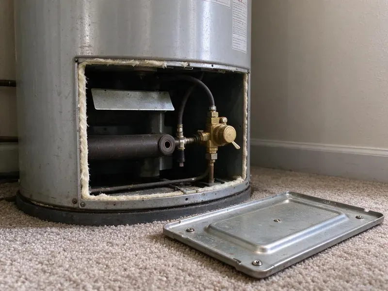

Sewer Repair in Princeton, WV
GJK Plumbing provides top-tier sewer repair throughout Princeton, WV, ensuring your system runs smoothly. Count on us for prompt, effective solutions to any sewer issue.
- Spot Repairs or Full Line Replacement
- Licensed Plumbers
- Written Repair Warranty
- Fast, Local Service
Stop the Backups and Get Your Sewer Line Repaired in Princeton, WV.
Don't let sewer problems disrupt your home. Contact GJK Plumbing now for prompt and professional service.
Expert Sewer Repair Services in Princeton, WV
GJK Plumbing offers complete sewer repair across Princeton, WV. Our skilled technicians are equipped to handle any sewer line problem, from minor blockages to major pipe damage caused by tree roots or shifting soil. We use advanced diagnostic tools to pinpoint the exact issue fast and recommend the most effective, long-lasting fix.
Our expertise includes:
- Trenchless Sewer Line Repair
- Spot repairs on clay, cast iron, ABS and PVC sewer lines
- Video Camera Sewer Inspection

Additional Plumbing Repair Services in Princeton, WV
We offer expert plumbing repair services across Princeton, WV to fix leaks, restore flow, and keep your system running smoothly.


Customers
Why Choose GJK Plumbing for Sewer Repair in Princeton, WV?
A failing sewer line does not fix itself, and every flush adds more water to the soil under your home. We find the real cause fast and repair only what needs repairing, so you are not paying to replace a line that still has years left.
- Clean Job Sites, We protect landscaping, haul off spoils and compact the trench when backfilling.
- Video Proof, You see the crack, root mass or belly on screen before you approve any repair.
- Clear Pricing, You'll always receive upfront, honest pricing before any work begins, with no hidden fees.
Citywide Coverage
Whether your home ties into a municipal main or a private lateral shared with neighbors, we cover the whole Princeton area. We know where the older sewer infrastructure sits and how deep most laterals run in local soil.
Experienced Team
The plumbers at GJK Plumbing are not just skilled technicians, they are true professionals with deep knowledge of the sewer systems common in Princeton homes. They approach every sewer repair with precision and care, delivering a durable fix that complies with all local plumbing codes and safety standards.
Safety-First Approach
Safety is paramount in all our sewer repair work. GJK Plumbing follows all local and state plumbing codes and safety regulations in West Virginia, so every repair is performed safely and correctly. We protect your property and our team throughout the entire process.
Trusted Certified Princeton Plumbing Services Professionals
At GJK Plumbing, we take pride in providing licensed, certified plumbing services throughout Princeton, WV. Backed by leading industry credentials, our experienced plumbers combine technical skill with genuine customer care. Whether it is repair, installation, or maintenance, we follow strict safety and quality standards to deliver lasting results you can trust.
Call Us Now PHCC Plumbing Contractor Recognition
PHCC Plumbing Contractor Recognition Better Business Bureau (BBB) Accreditation
Better Business Bureau (BBB) Accreditation Angi Certified Pro
Angi Certified Pro ISO 9001 Quality Management Certification
ISO 9001 Quality Management CertificationTrusted Sewer Repair Services in Princeton, WV
Sewer Camera Inspection in Princeton
Every sewer repair starts with a look inside the pipe. We run a self-leveling camera from your cleanout or a pulled toilet and record the full length of the line. A sonde in the camera head lets us mark the exact location and depth of every problem on the surface. You get a copy of the video and a plain-language summary of what we found. This step alone often saves homeowners from paying for repairs they do not need.

Sewer Line Leak Detection & Repair in Princeton, WV
Undetected sewer line leaks can lead to unpleasant odors, wet spots in your yard and even structural damage to your home's foundation. GJK Plumbing uses precise leak detection methods to pinpoint the source of the leak, whether it's a minor crack or a major break. Once found, we provide targeted repairs, from patching small leaks to replacing compromised sections of pipe, ensuring a watertight system.
Root Intrusion Repair in Princeton, WV
Tree and shrub roots go right for the moisture and nutrients leaking from old sewer joints. Once inside, they grow into dense mats that catch paper and waste. We cut the roots with a mechanical cutter or hydro-jetter, then repair or seal the joint so they cannot come right back. For lines with many rooted joints, we will show you when lining or replacement makes more sense than repeated cleaning.
Sewer Pipe Replacement Options in Princeton, WV
When repairs are no longer sufficient due to extensive damage, age or material failure, sewer pipe replacement becomes necessary. We offer various replacement options, including traditional trenching and modern trenchless technologies like pipe bursting or pipe lining. Our experts will assess your situation and recommend the most cost-effective and least disruptive option for your West Virginia property, ensuring a long-lasting new sewer line.
Sewer Repair Cost Comparison in Princeton, WV
A single spot repair is the most affordable fix when the rest of the line is sound. Pipe lining costs more per foot but avoids excavation and works well for long runs under driveways or landscaping. Full replacement is the right call when the pipe is Orangeburg, badly bellied or broken in several places. We lay out all three options with real numbers so you can compare cost against how long the repair will last.
Bellied Sewer Line Correction in Princeton, WV
A belly is a low spot where the pipe has sagged and holds standing water and solids. Bellies usually form where the original bedding washed out or where the soil settled after years of wet weather. Rocky, steep terrain is common across West Virginia, and many homes sit on hillsides where drainage and slope movement affect buried lines. We confirm the depth of standing water on camera, then re-bed and re-grade that section to restore proper fall. Correct slope is usually a quarter inch per foot for a typical residential line.
Trenchless Sewer Line Repair in Princeton, WV
For many sewer line issues, especially those caused by tree roots or pipe corrosion, trenchless repair offers a less invasive solution. This method, which includes pipe bursting or pipe lining, requires minimal excavation, saving your yard and landscaping from major disruption. We use specialized equipment to either pull a new pipe through the old one or insert a resin-coated liner that cures in place, creating a new, durable pipe inside the old one. It's an efficient and popular choice for preserving property appearance in Princeton.

Pipe Burst and Collapse Repair in Princeton, WV
A burst or collapsed sewer pipe can lead to significant damage and unsanitary conditions. These issues can result from shifting soil, corrosion of old cast iron or clay pipes, or heavy vehicle traffic above the line. GJK Plumbing offers emergency repair services to promptly address these critical failures. We accurately locate the damaged section and provide durable repair or replacement options, often using trenchless methods where appropriate to minimize disruption.
Sewer Repair Near Me in Princeton, WV
When you search for 'sewer repair near me' in Princeton, WV, GJK Plumbing is your reliable local solution. Our team is strategically located to provide quick response times for all your sewer line needs. We pride ourselves on being a reliable community partner, so expert plumbing help is always just a call away for residents and businesses.
No matter where you are in the greater Princeton area, our skilled plumbers are ready to address your sewer repair concerns promptly and professionally. We understand the urgency of sewer problems and strive to deliver efficient, effective service right to your doorstep.
GJK Plumbing at a Glance
- Licensed and insured plumbers serving Princeton, WV
- 24/7 emergency service with same-day scheduling
- Clear written estimates, no hidden fees
- 4.8-star rated by 832+ West Virginia customers
Princeton Map
Princeton Information
- Population
- 5,642
- Area codes
- Local
- Service area
- Princeton and communities within 40 miles
- Nearby
- Bluefield, Beckley, Oak Hill, Charleston
Sewer repair in Princeton, WV is frequently complicated by shifting soil and mature trees, which strain underground pipes and invite root intrusion. Rocky, steep terrain is common across West Virginia, and many homes sit on hillsides where drainage and slope movement affect buried lines.
Expert Services
Trust our professionals for reliable GJK Plumbing solutions in Princeton, WV.
Our Specialized Plumbing Services in Princeton, WV
At GJK Plumbing, we provide a complete range of plumbing services across Princeton, WV. From leak detection to full system installations, our team ensures fast, precise, and affordable service for both residential and commercial properties. Explore our core services below:


Here Is How Our Sewer Repair Process Works in Princeton, WV
At GJK Plumbing, we follow a systematic approach so every sewer repair in Princeton is handled professionally and effectively.
Request a Quote
Contact GJK Plumbing by calling (681) 223-3607 to describe your sewer problem and schedule an appointment. We'll gather initial details and set up a convenient time for a technician visit.
Thorough Inspection
Our expert plumbers arrive on time and conduct a detailed sewer camera inspection to correctly diagnose the issue. We'll pinpoint the exact location and nature of the problem, whether it's a clog, break or root intrusion.
Clear Solutions
Based on the inspection, we provide a clear, upfront estimate and discuss the best repair options for your situation. We explain the process, materials and expected timeline, so you understand each step.
Frequently Asked Questions About Sewer Repair in Princeton
The cost of sewer repair in Princeton, WV can vary a lot, typically ranging from $500 for minor spot repairs to $3,000 for extensive trenchless work, and up to $10,000 or more for full trench-based sewer line replacement. Factors like the extent of damage, type of repair, pipe material, depth and accessibility all influence the final price. We provide a detailed estimate after a full inspection.
Yes, weather can impact sewer lines. Damp basements and crawlspaces are common in Princeton and around the state, which can speed up corrosion on pipes and fittings. Heavy rains can saturate the ground, putting pressure on pipes and worsening existing cracks. Dry spells can cause soil to shift, leading to pipe misalignment or breaks.
Common causes include tree root intrusion, especially from older trees in established neighborhoods. Rocky, steep terrain is common across West Virginia, and many homes sit on hillsides where drainage and slope movement affect buried lines. Corrosion of older cast iron or clay pipes, grease buildup from improper disposal and foreign objects flushed down drains also lead to blockages and breaks.
Usually not. Camera locating lets us dig only at the damaged spot, and many problems can be fixed through a single pit or with trenchless methods. We protect landscaping and restore the area when we are done.
We work with all common types of sewer pipe found in Princeton and West Virginia, including PVC, ABS, cast iron, clay and Orangeburg. Our technicians are skilled in repairing and replacing lines made from various materials, providing compatibility and durability with current plumbing standards. We also use high-quality, code-compliant replacement materials.
Yes, GJK Plumbing stands behind the quality of our sewer repair work. We offer warranties on parts and labor for our sewer repair services. The exact terms and length of the warranty will be discussed with you before any work begins, giving you peace of mind about your investment.
Yes. Our sewer repairs come with a written warranty on workmanship, and the pipe and fittings carry manufacturer warranties. We explain clearly what is covered before the job starts.
Sewer repair is a complex job that calls for specialized tools, expertise and adherence to plumbing codes. Attempting DIY sewer repair can lead to further damage, costly mistakes and potential health hazards. It's always recommended to hire a licensed professional like GJK Plumbing so the job is done correctly and safely, especially in Princeton where permits may be required.
What People Are Saying About Our Plumbing Experts?

Emily R.
I called GJK Plumbing for plumbing repair, and the technician was fast, polite, and thorough. They explained the problem clearly and fixed it the same day. I will definitely hire them again. Highly recommended!
Plumbing Repair · Dunbar, WV
Robert G.
The trenchless sewer replacement saved our front yard. They walked us through the camera inspection footage first so we knew exactly what we were paying for.
Sewer Line Replacement · Dunbar, WV
Patricia H.
We had a slab leak that two other companies could not find. GJK Plumbing located it in under an hour, explained our options, and the price matched the quote to the dollar.
Slab Leak Repair · Dunbar, WV
Mark T.
When our office needed drain cleaning, GJK Plumbing provided quick, reliable service. The plumber arrived on time and made sure every drain flowed perfectly before leaving. Very satisfied.
Drain Cleaning · Charleston, WV
Laura S.
I scheduled a water heater replacement, and the team made the process smooth and affordable. The new unit works perfectly, and they cleaned up after completing the job.
Water Heater Replacement · Charleston, WVJames P.
Our commercial plumbing system had a leak under the sink, and GJK Plumbing handled it professionally. The plumbers arrived quickly and restored everything without disruption to our customers.
Commercial Plumbing · Beckley, WV